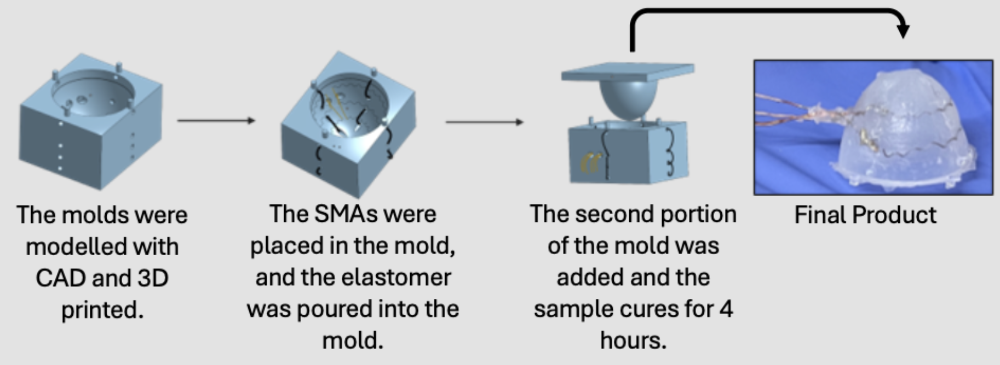
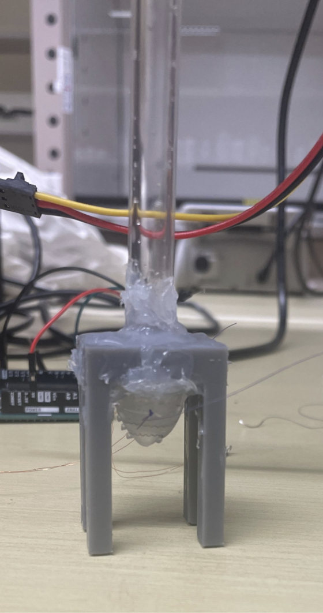

Developing a bladder management device at the BioAugmentative Interfaces Lab
During my co-op and part-time work at the BioAugmentative Interfaces Laboratory, I focused on developing a bladder management device. The goal was to create a device that could void rodent bladders using shape memory alloys (SMAs) — materials that contract when heated above a transition temperature, producing force without the need for conventional motors or hydraulics.
When I started at the lab, the device was not efficient at voiding rat bladders, the fabrication process was time-consuming, and there was no control system in place. My work covered three main areas: developing a control system, improving the actuator fabrication, and building a wireless communication protocol — all tested iteratively through pre-clinical studies.
Developing the control system
My first task was developing a control system in C++ to manage the actuation of the device. I tested different control algorithms to determine which methods were the most efficient — meaning they minimized power usage and external temperature while maximizing voiding performance.
I measured external and internal temperatures using a thermocouple and an infrared camera. The resulting data showed me which parts of the device were generating too much external heat, which informed where additional insulation was needed in subsequent design iterations.
SMAs are difficult to control precisely because their actuation response is non-linear — the force output depends on temperature, which changes slowly and has significant hysteresis between heating and cooling. Over-heating an SMA permanently degrades its shape memory properties, so the control system had to stay within a specific operating window. After testing several approaches, a timed pulse protocol with rest intervals gave the best balance of actuation performance, device longevity, and safe surface temperatures.

Improving the actuator fabrication
The next area I focused on was improving the fabrication of the actuator. I created several CAD prototypes of different molds used to produce silicone elastomer structures with the SMA actuator embedded inside. Silicone elastomer was chosen as the material because it insulates the heat generated by the actuator and is soft and flexible, which reduces the inflammation response when the device is implanted.
Once the molds were 3D printed, I fabricated the actuator components and tested each design on a test fixture I built. The fixture consisted of an artificial rat bladder, a flow meter, tubing, and a stand. I programmed the flow meter in C++ using an Arduino so I could measure flow velocity during actuation, which also allowed me to calculate the force each actuator applied to the artificial bladder.
Getting consistent results across fabrication runs was one of the harder problems. Small variations in where the SMA wires were positioned inside the mold affected the force distribution and voiding efficiency significantly. I addressed this by designing wire-registration features directly into the mold so that the wire position was fixed before the elastomer was poured. I also added a vacuum degassing step to eliminate air bubbles in the elastomer before casting.

BLE communication protocol on a custom PCB
The next portion of my work was developing a Bluetooth Low Energy (BLE) communication protocol between the device and a user's phone. To do this, I created a test PCB using a u-blox BMD-340 chip (nRF52840-based) and used Zephyr OS to develop the protocol. The test PCB was programmed using an nRF52840 development board as a programmer via Serial Wire Debug (SWD).
Because I was working on a custom PCB rather than the development board, I also created a devicetree file for the new hardware to ensure a smooth transition from the commercial board to the custom one. This required carefully mapping all peripheral connections and checking for pinout conflicts — small errors here caused hard-to-diagnose failures that required oscilloscope verification to track down.
In the communication protocol I customized a GATT service profile, organized the GAP setup, and ensured that power use was as limited as possible when the device was on standby. The goal was to minimize quiescent current draw to extend battery life to a level compatible with a clinical implant cycle. The protocol was validated against a companion smartphone application to confirm reliable connection, low command latency, and correct handling of disconnection events.
Rodent surgeries and cadaver model testing
To test the device, I conducted pre-clinical validation studies involving rodent surgeries and cadaver models. These tests let me see how the device functions with an intact bladder system and optimize the design based on what I observed. The studies were completed iteratively throughout development so that design changes could be evaluated as they were made rather than all at once at the end.
Rodent surgeries were conducted under institutional animal care protocols. Cadaver testing gave me access to human-scale anatomy and allowed me to evaluate device fit and the implantation approach in conditions closer to clinical use. Together, these studies provided the feedback needed to refine the actuator geometry and insulation design through multiple rounds of iteration.